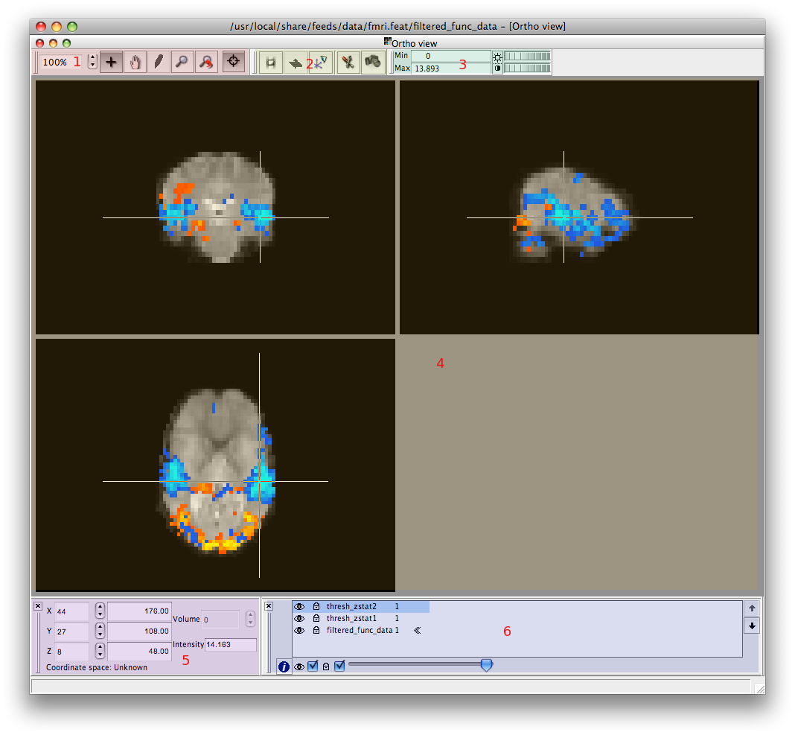

Contents
- Introduction
- User Guide
Basic Usage
Loading images into FSLView
FSLView can read Analyze and NIFTI files, either uncompressed or compressed, and either as a single file (e.g., image.nii.gz) or two files (e.g., image.hdr & image.img). To open an image, select the Open option from the File menu. A file opening dialog will appear. It will list all directories and all files with a suitable extension. Select the image file that you want to load and press the Open button.
The image will then be opened in Ortho view; coronal, sagittal and axial views are displayed simultaneously. If there is sufficient information present in the image header, L, R, A, P, S, I (Left, Right, Anterior=front, Posterior=back, Superior=top, Inferior=bottom) orientation markers will be displayed, making the orientation clear. The image name will be displayed in the Image List. Because this is the first image to be loaded it will be the "Main Image"; in the Image List it will be marked with a small set of arrows .
To load a second image (an "overlay"), select File -> Add. The image to be added must have the same dimensions as the Main Image, otherwise a message will appear saying Cannot load incompatible overlay.
When the second overlay is added, its name will appear in the Image List. Since it is not the Main Image it will not be marked with arrows. The Image List control can be used to change the transparency of images, change the order in which they are drawn, make them visible or invisible and lock or unlock them (for editing).
Organising loaded images for display
Each graphical view renders a combination of the stored images according to the settings of that view's layer tool. You can think of the view as being the result of observing a stack of overlaid layers with different visibility, transparency, colour, etc., settings.
The top of the layer list (7) represents the uppermost layer of the rendered stack. Rendering is evaluated from the bottom up so layers higher up the list obscure those lower down. {{attachment:
- The "Visibilty" checkbox (1) toggles whether or not a given layer is visible. You can also toggle this property by simply double-clicking on the relevant layer in the layer list.
- Each layer can be locked using the "Lock" checkbox (2). This property determines if a given layer can be edited or not. By default freshly loaded layers are locked, but new layers, those created with the "Create Mask" menu option, are un-locked by default and can be edited immediately.
The "Transparency" slider (3) determines how the selected layer blends with the layers below it. A value of 1 makes any voxel above threshold completely obscure the same voxel in the layer below, while a value of 0 means this image makes no contribution to the rendered stack.
- The "Layer Up" (4), and "Layer Down" (5), buttons move the selected layer up or down the stack. Items lower down are obscured by those higher up the stack.
The "Info" button (6) calls up the layer info dialog where you can get a fuller description of an images properties as well as modify some advanced options such as the look up table to be used.
- The "Layer List" box (7) indicates the order in which the layers will be evaluated along with visual feedback of that layers display settings.
The layer marked with chevrons (8) to the right of it is the "main layer". This layer is the first one loaded during any given session and cannot be removed from the list as much of the viewer's display capabilities are determined from this layer's attributes.
Different image views
Images can be displayed using several kinds of 2 & 3-D views, selectable via the Tools menu:
- Orthographic - the default view showing one slice each of: axial; coronal and sagittal planes.
- Lightbox - showing all axial slices simultaneously.
- Single - shows only a single slice - the orientation can be switched between axial, coronal and sagittal.
Here we can see a typical view, "Ortho view", with the default set of toolbars enabled:
* The "Mode" toolbar (1) determining how the cursor behaves. |
 |
* The "View" toolbar(2) can be used to animate/re-orient certain views. |
|
* The "BriCon" control(3) for adjusting the way voxel intensities get mapped to colours on screen. |
|
* The "Slice" views(4) which render the images as single slices and provide cursor input via the mouse. |
|
* The "Cursor" tool(5) which provides control and feedback via the cursor position. |
|
* The "Layer" tool(6) used to control the order and individual properties of each layer to be draw. |
You can open as many views as you like (although the viewer might get a little slow if you open too many). This includes opening more than one instance of any given type - for example, you might want to start with the Ortho view, then open another Ortho view, in which you have different images from the Layer List turned on, so that you can move the cursor around in the volume and compare different images (see example). If you close down all views then all loaded images will be discarded and you will have to re-open a file to start viewing again.
If you end up with too many open sub-windows to keep track of, Window -> Tile will auto-arrange them so that they are all visible simultaneously, and Window -> Cascade will place all sub-windows in a diagonal overlapping line, for you to select and adjust those of interest.
Moving the mouse over a slice while holding down the left mouse button will cause the cursor to move around the image. The cursor position and value can be viewed on the Cursor Toolbar. It is also possible to move the cursor to any position by altering the values in the Cursor Toolbar. FSLView has "linked cursor" behaviour: as the cursor is moved around in one view it also moves in all other views. Visit the "View Options" dialog to turn on/off the linked cursor as needed.
Mode toolbar
Brightness and contrast control
Cursor position widget
Image info widget
Masking & editing
Advanced Usage
Viewing FMRI data
Viewing Diffusion MRI data
Anatomical atlas tools
3D rendering
Starting FSLView from the terminal
Support and Further Details
Support, bug-reporting, etc
Release notes